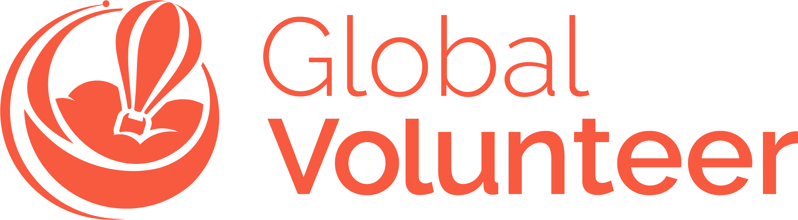

A 6–8 week cross-cultural experience for ages 18–30, on projects tied to the UN Sustainable Development Goals.
Global Volunteer is AIESEC's flagship volunteering program — a transformative experience crafted to inspire personal growth, immerse you in a new culture, and above all, drive meaningful impact. In India, that means teaching in community classrooms, championing climate action, empowering local entrepreneurs, and seeing the results of your work in real time, in real communities.
You won't be a tourist passing through. You'll live with locals, work beside changemakers your own age, celebrate festivals you've only seen in photos, and build friendships that stretch across 120+ countries. Six to eight weeks is all it takes — you arrive curious, and you leave changed.
A glimpse of the projects, people, and places that will fill your weeks in India.


Real stories from exchange participants who chose India — in their own words.